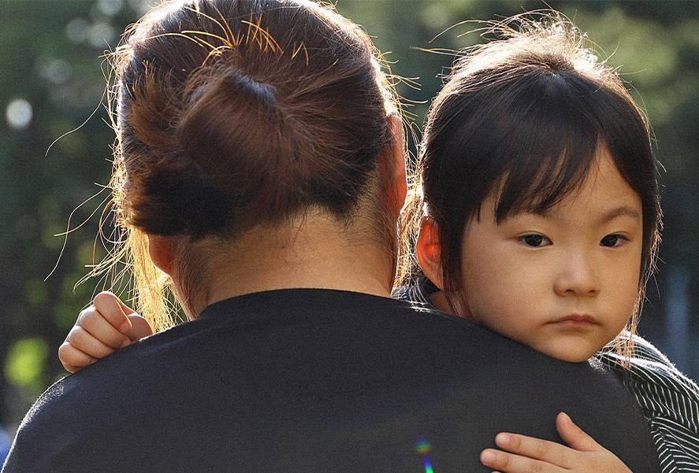
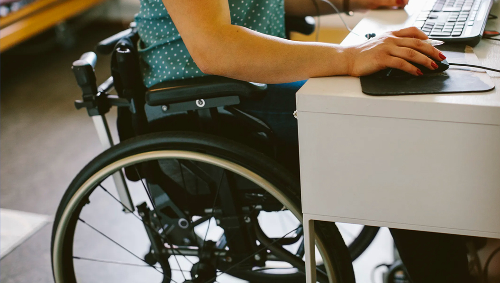
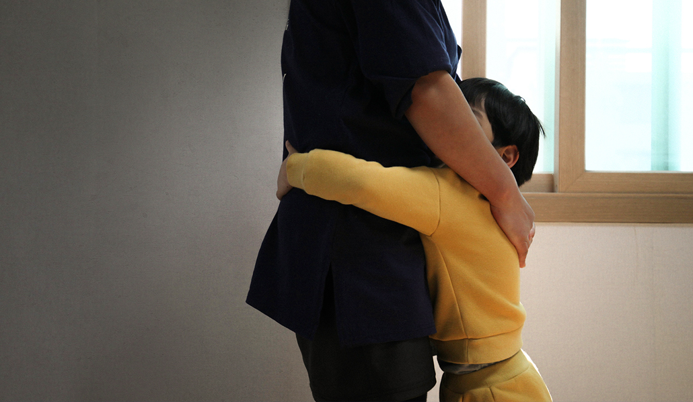
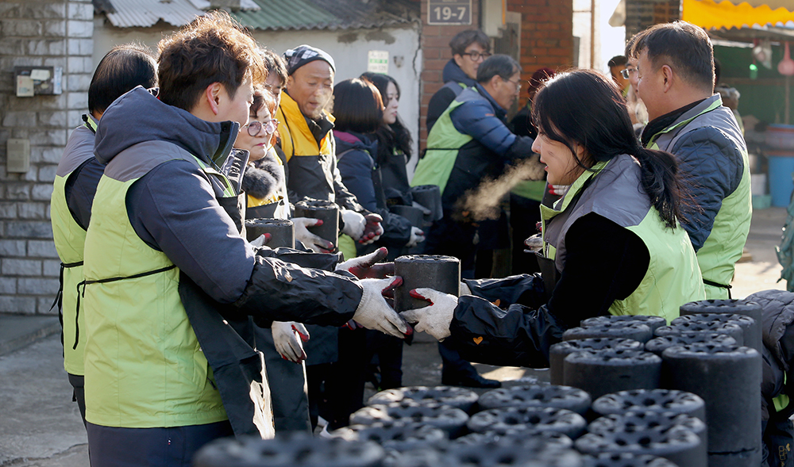

사회공헌
우리의 삶 전 영역에 도움을 주는 기업으로 거듭나고자 합니다
추진방향
한샘은 '주거 환경 개선을 통한 인류 발전에 공헌'
이라는 사명을 갖고 나아갑니다
 주거환경 개선
주거환경 개선 일자리 창출
일자리 창출 환경보전
환경보전 소외계층 아동 지원
소외계층 아동 지원
주요활동
사회적 가치를 높이기 위한 한샘의 노력
-

01
여성가장 자립지원
한샘은 모자가정이 온전하게 자립할 수 있도록 다양한 지원사업을 추진하고 있습니다. 우선 모자가정의 주거환경을 개선해 줌으로써, 집이 머물고 싶고 행복한 가정이 될 수 있도록 돕고 있습니다. 그리고 모자가정의 정서안정을 위한 심리상담과, 보호시설을 퇴소한 모자가정의 안전한 거주지 마련에 도움을 주고 있습니다. 앞으로도 여성가장의 씩씩하고 당당한 자립을 위한 노력을 계속 해 나갈 것입니다.
-

02
장애인 일자리 창출
한샘은 2017년 경기도 안산에 장애인 일자리 창출매장인 ‘굿윌스토어 한샘1호점’의 문을 열었습니다. 장애인을 판매사원으로 고용하고 매장에서 발생하는 수익금은 또 다른 장애인 일자리 창출에 사용됩니다. 또한 2016년에는 소속 선수 32명과 근로계약을 체결하여 선수들이 훈련에 전념할 수 있도록 돕고 있습니다. 한샘은 장애인들에게 일할 기회를 제공함으로써 사회구성원으로 자리잡을 수 있도록 하는 데 초점을 맞추고 있습니다.
-

03
행복한 가정 만들기
한샘은 각 가정의 행복을 위한 활동도 계속해 나가고 있습니다. 경기도어린이박물관과 연계하여 행복한 가정을 만들기 위한 부모교육을 운영하고 있습니다. 행복수업은 2014년부터 지금까지 7천여 부모님께서 참여하셨습니다. 그리고 KBS ‘동행’ 프로그램을 통해 저소득가정의 주거환경을 개선하고 있습니다. 또한 매년 경기도 내 소외계층 아동을 초청하여 문화체험 기회를 제공하는 시간을 만들어가고 있습니다.
-

04
나눔문화 실천
한샘은 임직원들이 나눔을 실천할 수 있는 다양한 활동들을 운영하고 있습니다. 신입사원들은 회사의 핵심가치인 상생추구 가치를 경험할 수 있도록 입문교육 중에 봉사활동을 진행합니다. 그리고 임직원들은 주거환경 개선활동, 복지관 봉사활동, 백혈병 어린이를 위한 키트 만들기 등에 참여하며 나눔을 실천하고 있습니다. 우리의 자원을 필요로 하는모든 곳에 작은도움의 손길을 전하고, 우리는 이것을 가장 큰 보람으로 여기겠습니다.
사회공헌 발자취
더 나은 세상을 만들어 나가기 위한
한샘의 사회공헌 발자취
-
- 2021
- 지속가능한 사회실현을 위한 전략 추진
- 주거환경 개선사업, 임직원 봉사활동
- 전국 소방청 근무시설 환경개선 활동
-
- 2020
- 코로나19 극복을 위한 4대 전략 추진
- 한부모 가정 위한 코로나 극복키트 기부
- 정서적자립지원, 재난긴급지원
-
- 2019
- 한부모 여성 가장에 화장대 50대 기부
- 장애인스포츠단과 함께한 친선탁구대회
- 전국 소회계층 지원 업무협약 체결
-
- 2018
- 사랑의자 만들기 행사
- 마포구 노을공원 나무심기 봉사활동
- 모자가정 소아암 환우 치료미 모금행사
-
- 2017
- 모자가정 소아암 환우 치료미 모금행사
- 안양 '2017사랑의 케이크 만들기' 행사
- '송암동산' 보육원 방문 봉사활동
-
- 2016
- 울산시 태풍 피해 수재민에 생활용품 지원
- 시각장애인 복지회에 촉각교재 개발지원
- 홀몸어르신, 장애인 세대에 김치나눔
-
- 2015
- 지역 바자회, 주민 축제 등에 물품후원
- '명휘원' 등 지역 사회복지시설 지원
- 경기도어린이 박물관 '행복수업'등 후원
-
- 2014
- 경기도 어린이박물관 현금/가구 지원
- 상록장애인복지관 가구 지원
- 한숲지역아동센터 환경 개선사업